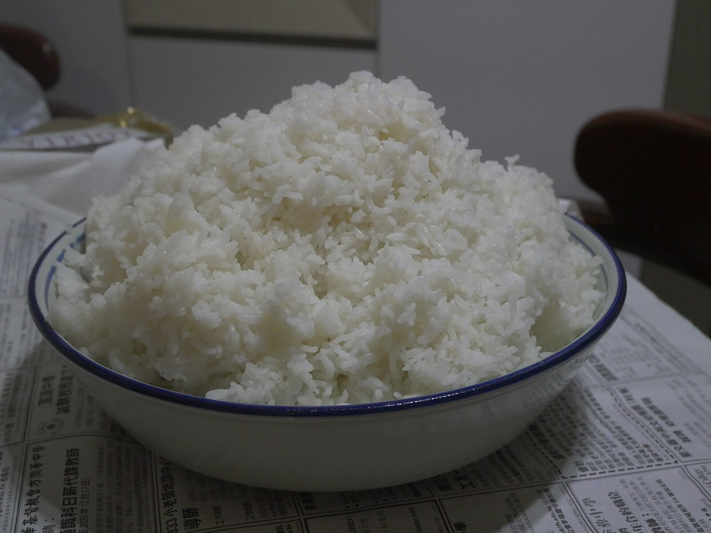

Home Page
Rice

It's rice. 'Nuff Said.
What, you want more? Fine. There's a reason this dish is found in households
across the world. One cannot escape the endless variations to be found of
this staple starch. We'll be keeping it basic for now though.
Ingredients
- 1 cup of rice
- 2 cups of water
- A bit of vegetable oil
- Salt
Steps
- Rinse the rice
- Heat up the oil in a pot
- Dump in the rice and let it fry for three minutes
- Pour in the water and add a pinch of salt
- Cover the pot and turn the heat down to low or medium. Let the rice boil
for half an hour